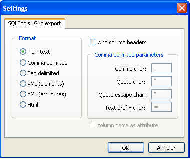

Show all necessary informations and options to configure SQLTools grid
export. You can choose the export format (Plain text, HTML, with or without
column headers...). For comma delimited format, you can also indicate comma
char, quota char/quota escape char and text prefix char (to keep leading
zero in char strings, for example).
